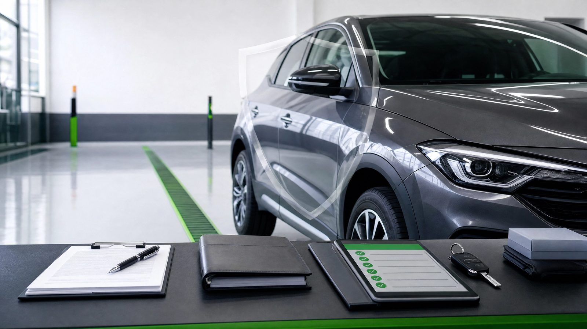

1. Contrato
Contrato de locação por escrito, com direitos e deveres das duas partes definidos antes da retirada.
A Nomade Drive não vende "seguro mágico". Trabalhamos com uma combinação de instrumentos que reduz o risco para quem aluga e para quem é dono — sempre conforme plano, regras, condições e a elegibilidade do veículo.

Em vez de prometer uma solução única e ilimitada, combinamos várias camadas. Cada uma cobre uma parte do risco. Juntas, dão segurança real — dentro de regras claras.
Contrato de locação por escrito, com direitos e deveres das duas partes definidos antes da retirada.
Vistoria com foto e vídeo na retirada e na devolução, assinada pelos dois lados.
Checklist técnico do veículo — quando aplicável, feito em oficina parceira credenciada.
Garantia reembolsável, definida por categoria, devolvida ao fim se não houver pendências.
Atendimento humano por WhatsApp e linha de emergência 24/7 para acidentes e panes.
Proteção veicular conforme o plano e a elegibilidade do veículo — detalhada abaixo.
Importante: a proteção descrita nesta página segue plano, regras, condições e elegibilidade. É uma camada de proteção com escopo definido em contrato — não uma promessa ilimitada. O que se aplica ao seu caso é sempre confirmado por escrito.
O que cada item abaixo contempla depende do plano escolhido, da categoria do veículo e das condições do contrato. Use como referência — o escopo exato é confirmado por escrito.
Proteção em casos de roubo ou furto do veículo, conforme as regras e a elegibilidade do plano. Sujeita a análise e ao registro de boletim de ocorrência.
Contempla danos de colisão ao veículo locado, conforme o plano e as condições. Em sinistro coberto, aplica-se a cota de participação.
Proteção para danos materiais e corporais causados a terceiros, dentro dos limites e condições previstos no plano contratado.
Amparo a passageiros em caso de acidente, conforme o plano. Limites e condições definidos no contrato.
Apoio a despesas médicas decorrentes de acidente, dentro dos limites previstos no plano e nas condições contratadas.
Veículo substituto em situações previstas, conforme a disponibilidade da rede e as regras do plano.
Reboque e assistência em caso de pane ou acidente, conforme a cobertura e os limites do plano.
Proteção para vidros, faróis e lanternas. Em geral com cota de participação reduzida, conforme o plano.
Valor de participação do condutor quando um sinistro coberto acontece e a proteção é acionada. Definida por categoria e plano, informada no contrato.
São duas coisas diferentes. Entender a diferença evita surpresas.
Resumindo: a caução é uma garantia que volta para você; a cota de participação só aparece se houver um sinistro coberto. Os valores de ambas são informados no orçamento e no contrato.
Tão importante quanto saber o que a proteção contempla é saber os limites. Algumas situações podem não estar cobertas, no todo ou em parte, conforme o plano e o contrato:
A proteção não deve ser interpretada como autorização para mau uso. Sujeira excessiva, uso de drogas, cigarro, negligência, danos internos, manchas, odores fortes, multas, infrações ou uso em desacordo com contrato podem gerar cobrança adicional e análise separada. Veja a política de limpeza e devolução.
Dirigir sob efeito de álcool ou substâncias, participar de competições ou rachas, ou trafegar fora de estrada não autorizada.
Veículo conduzido por pessoa que não consta no contrato ou sem habilitação válida.
Coberturas não incluídas no plano contratado, ou valores acima dos limites previstos.
Danos pré-existentes não apontados na vistoria de retirada podem não ser considerados.
Multas, pedágios e despesas pessoais são sempre de responsabilidade do condutor.
Negligência grave, dolo, subaluguel ou uso comercial não autorizado podem afastar a proteção.
Esta lista é informativa e não substitui o contrato. As exclusões, os limites e as condições exatas constam no contrato e na apólice da proteção contratada, conforme a análise do caso.
Cada veículo e cada locação têm condições próprias. Vale conhecer o plano, a caução e a cota de participação antes de fechar.